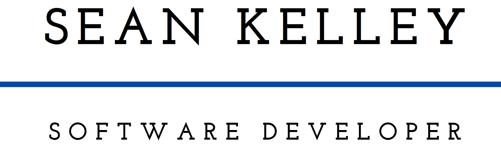

Sean Kelley
Objective
I am a hardworking and dedicated individual who is excited about software development. I am currently looking for a place to start my career in the tech world so I can develop my professional skill set. I am seeking any opportunity to further my career and passion for software development.
Education
- Northwest States Community College, Archbold Ohio. Fall 2020-May, 2022.
- The Ohio State University; Columbus, OH. Major: Computer Science and Engineering. Fall 2022-May 2024
Work Experience
- Menards, Columbus Ohio. Stocker/Sales. August 2018-Present
Duties
- Stock shelves
- Assist guests in finding products, pricing, and knowledge on products
- Mix paint and design ceiling tile projects
Awards
- Presidential Scholarship to Northwest State Community College
- Defiance High School Engineering Technology CADD 4.00 GPA Award
Technical Skills
- Python
- C#
- HTML and CSS
- AutoCAD
- Solidworks
- Microsoft Office
- Building Computers
- General Knowledge About Computers
Soft Skills
- Great in groups
- Communication
- Problem solving
- Detail Oriented
References
- James Proulx, Contact: jamespproulx@gmail.com. Peer Mentor. Senior Software Engineer at Draftkings.